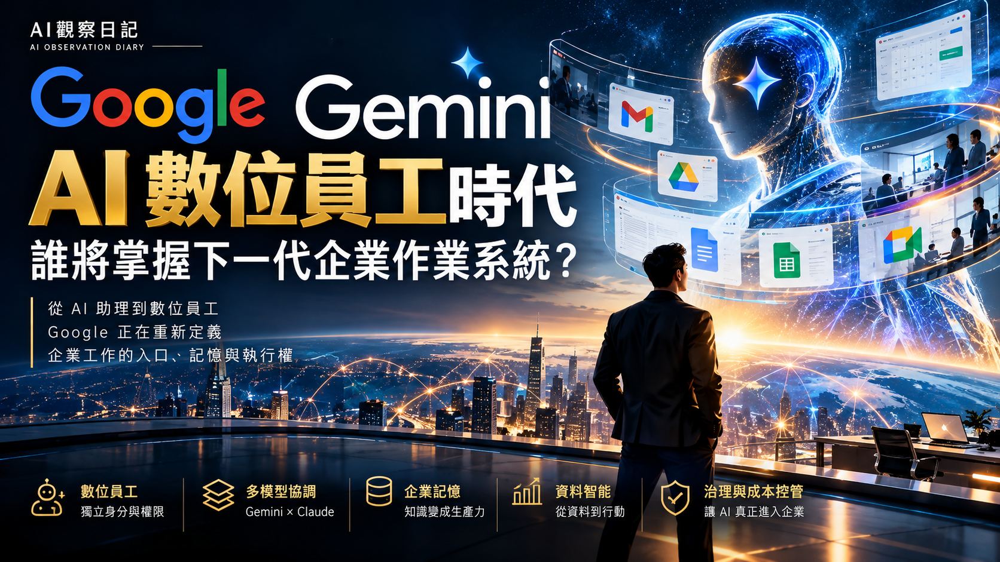

Google Gemini at Work｜從 AI 助理走向具企業身分的數位協作者
一句話摘要
AI觀察日記將 Google Gemini at Work 2026 解讀為：Google 不只要提供模型或聊天助理，而是想把 Gemini 變成可跨工作入口、長時間執行、連接企業系統並受治理的通用工作代理。Google Cloud 的 2026 年 10 月 9 日官方公告確認了這個產品方向；但可用範圍、成熟度、成本與效益仍必須依企業方案、區域與實際工作負載個別驗證。

來源脈絡與查核邊界
本文保存 AI觀察日記｜AI未來週報於 2026 年 10 月 13 日發布的分析文章。作者以「從 Copilot 到 Coworker」描述這波產品更新：企業不只是讓員工向 AI 問答，而是可以交付一項可驗收的工作目標。
Google Cloud 在 2026 年 10 月 9 日由 CEO Thomas Kurian 發布的官方文章，將 Gemini 定位為「single, universal agent for work」。以下把官方已公布的產品方向與來源文章的策略判讀分開呈現；文章內的市場結構、SaaS 影響與企業個案 ROI，不視為 Google 對所有客戶的保證。
Google 官方已公布的重點
- 統一工作代理：Google 表示 Gemini 可處理知識工作、內容製作與程式撰寫／執行；使用者交付目標後，代理可規劃工作、使用 skills 與 tools、連接系統，並把完成結果帶回既有工作環境。
- 多入口與持續執行：官方描述 Gemini 可透過網頁、行動裝置、Windows、Mac、命令列、Google Workspace、Microsoft 365 與 Slack 等入口使用；其 cloud execution 與共享記憶／context 設計，目標是讓耗時數小時或數天的工作在使用者離開後繼續運行。
- 團隊或角色代理：官方明確提及 Gemini 可作為個人助理，也可代表一個團隊或組織內的特定角色工作。這是來源文章提出「數位協作者」觀點的直接產品脈絡，但不等於法律或人資意義上的員工。
- 模型與成本控制：官方公告提到 multi-model orchestration、Smart Routing 與 real-time spend caps。來源文章將此解讀為 Google 嘗試把工作協調層與底層模型選擇分開；實際支援的模型、方案和區域仍應以當期 Google 文件與合約為準。
- 治理是核心而非附加項：Google 將 identity and policy management、authorization and permission controls、secure sandboxing、network gateways 列為代理安全與治理機制的一部分。
值得帶走的產品判讀
來源文章最有價值之處，不在於把 Gemini 當成單一模型更新，而是提醒企業：競爭焦點會從「哪個模型回答得更好」擴展到誰管理工作入口、資料、記憶、工具、身分、權限和成本。
其中三個可用於採用評估的問題：
- 工作成果是否可驗收：先選有清楚輸入、輸出、品質標準與人工覆核點的任務，例如文件審查、例行報表、內部知識查詢或事件分類。
- 身分與權限是否可控：把代理視為新的企業主體，為資料、寄信、日曆、工具和外部系統分別設定最小必要權限，而非沿用某位員工的完整帳號權限。
- 成本是否以成果衡量：除了 token 或 API 用量，也量測成功率、重試、人工接管比例、總處理時間與每一份「被接受成果」的成本。
導入檢核表
- 定義一個低風險、高頻且可量化的試點工作，而不是先大量建立代理。
- 建立輸出驗收規則、失敗重試上限、人工接管流程與可追溯紀錄。
- 對每一個 connector、資料來源與工具權限採最小權限；高影響動作保留明確的人類核准。
- 分開盤點模型費用、工具／雲端費用、持續執行成本，以及監督與修正的人力成本。
- 在導入前確認服務方案、區域支援、資料駐留、保留／刪除政策與產業合規要求；這些均為可變動事項。
為什麼值得收進 AI 學習雷達
這篇文章提供的是企業 agent 化的系統觀：真正的護城河不只是模型能力，而是能否把長時間任務、企業記憶、資料語意、工具調度、身分權限與治理做成可被組織採用的工作系統。對正在規劃 AI 導入的人而言，最實用的提醒是先證明「可接受的工作成果」，再擴大代理數量。
原始連結
- AI觀察日記｜AI未來週報：
https://futureaitw.substack.com/p/google-geminiai
- Google Cloud 官方公告：
https://cloud.google.com/blog/products/ai-machine-learning/welcome-to-gemini-at-work-2026